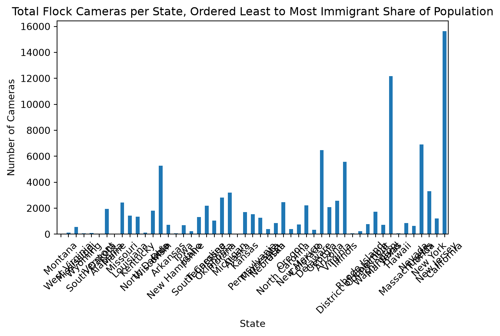
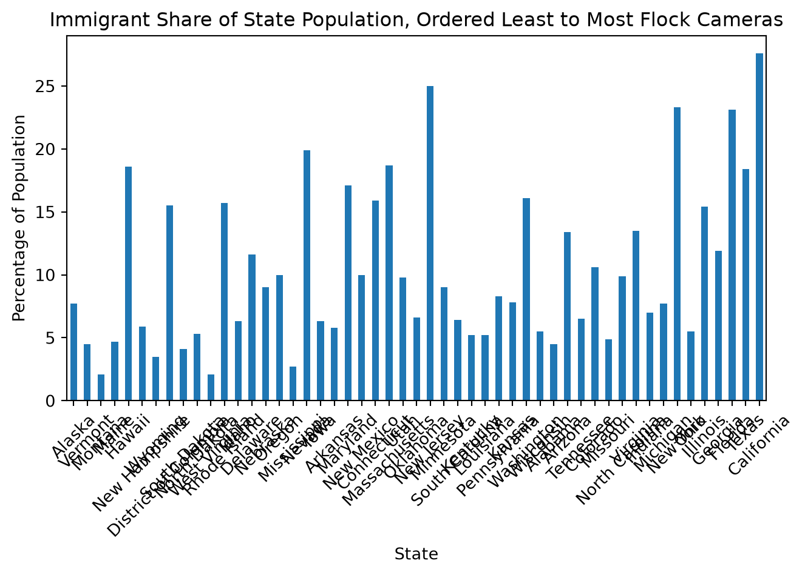

import pandas as pd
from pyprojroot import here # this helps us navigate tricky path stuff between local runs and quarto builds
# Loading all of the datasets I will need
file_path_state = here("projects/leah/_data/flockperstate.csv")
per_state_df = pd.read_csv(file_path_state, sep=',')
file_path_private = here("projects/leah/_data/private-operators.csv")
df_priv = pd.read_csv(file_path_private, sep=',')
file_path_cities = here("projects/leah/_data/findingflock-cameras-by-city.csv")
df_cities = pd.read_csv(file_path_cities, sep=',')
file_path_election = here("projects/leah/_data/Presidential-Election-Results-by-US-County-2024.csv")
df_election = pd.read_csv(file_path_election, sep=',')
file_path_immigration = here("projects/leah/_data/mpi-data-hub_immigrants_n-percent-us-population-by-state-2024.csv")
df_immigration = pd.read_csv(file_path_immigration, sep=',')
# accidentally had 6000 extra empty lines from the excel file that I downloaded whoops!
df_immigration = df_immigration.drop(df_immigration.index[52:6225])
# data cleaning from the previous qmd
per_state_df["Flock Cameras"] = pd.to_numeric(per_state_df["Flock Cameras"].str.replace(",", ""))
df_priv["Cameras"] = pd.to_numeric(df_priv["Cameras"].str.replace(",", ""))
df_immigration = df_immigration.drop(df_immigration.index[52:6225])More Questions
Stage 2.2: Continued Explorations of the Dataset.
Fifth question: which states have the lowest flock usage?
After my initial work, I want to switch gears to the other end of the equation and see if the same is true, states with less flock cameras have less population of immigrants.
# sorting by the least amount of flock cameras
sort = per_state_df.sort_values(by=["Flock Cameras"], ascending=True)
print(sort.head(5)) State Flock Cameras
1 Alaska 1
45 Vermont 18
26 Montana 43
19 Maine 50
11 Hawaii 55The immediate difference to me from the least and the most flock cameras is the majoirty of the bottom five are in the northern region of the US and the top five are southern. This tracks with my previous findings. Now I am trying to figure out if this tracks with the immigration stats as well.
Sixth Question: Immigration Ranking per State?
Previously I only inquired about the top five states with the most flock cameras. I want to now see the actual rankings of immigration percentage per population of each state.
#making a subset of the originial dataset with just the share and the state and taking out the united states as a whole
sorted_immigration = df_immigration[["State", "Immigrant Share of Total State Population24"]]
sorted_immigration = sorted_immigration.iloc[1:]
# taking out the percent sign and making them floats so they can be compared as numbers
sorted_immigration["Immigrant Share of Total State Population24"] = sorted_immigration['Immigrant Share of Total State Population24'].str[:-1].astype(float)
#sorting in ascending order
rank_immigration = sorted_immigration.sort_values(by="Immigrant Share of Total State Population24")
print(rank_immigration) State Immigrant Share of Total State Population24
27 Montana 2.1
49 West Virginia 2.1
25 Mississippi 2.7
51 Wyoming 3.5
42 South Dakota 4.1
46 Vermont 4.5
1 Alabama 4.5
20 Maine 4.7
26 Missouri 4.9
19 Louisiana 5.2
18 Kentucky 5.2
35 North Dakota 5.3
50 Wisconsin 5.5
36 Ohio 5.5
4 Arkansas 5.8
30 New Hampshire 5.9
16 Iowa 6.3
13 Idaho 6.3
41 South Carolina 6.4
43 Tennessee 6.5
37 Oklahoma 6.6
15 Indiana 7.0
23 Michigan 7.7
2 Alaska 7.7
17 Kansas 7.8
39 Pennsylvania 8.3
24 Minnesota 9.0
28 Nebraska 9.0
45 Utah 9.8
34 North Carolina 9.9
38 Oregon 10.0
32 New Mexico 10.0
6 Colorado 10.6
8 Delaware 11.6
11 Georgia 11.9
3 Arizona 13.4
47 Virginia 13.5
14 Illinois 15.4
9 District of Columbia 15.5
40 Rhode Island 15.7
7 Connecticut 15.9
48 Washington 16.1
21 Maryland 17.1
44 Texas 18.4
12 Hawaii 18.6
22 Massachusetts 18.7
29 Nevada 19.9
10 Florida 23.1
33 New York 23.3
31 New Jersey 25.0
5 California 27.6I now have the list of each states immigration percentage of their population from 2024 in ranked order. I can use this to make a graph showing the number of flock cameras per state and the share of immigration. I am unsure how I want to graph them, possibly a stacked bar chart or having them in order on the x axsis based on the ranking. My issue is the number of flock cameras ranges from 1 to tens of thousands.
Seventh Question: Merging Datasets together, figuring out graph
The first thing I need to do is combine the two datasets that have the population share and the number of flock cameras. I think the only way I can do this right now is by having the states ordered on the x axis in the least to greatest share of the population.
# when I first ran the merge alabama and alaska did not merge because of a trailing space at the end of the two values so I have to get
# rid of that first!
per_state_df["State"] = per_state_df["State"].str.strip()
# merging the ranked and per state dfs so I can create a graph
merged_df = pd.merge(rank_immigration, per_state_df, on="State", how="outer")
print(merged_df) State Immigrant Share of Total State Population24 \
0 Alabama 4.5
1 Alaska 7.7
2 Arizona 13.4
3 Arkansas 5.8
4 California 27.6
5 Colorado 10.6
6 Connecticut 15.9
7 Delaware 11.6
8 District of Columbia 15.5
9 Florida 23.1
10 Georgia 11.9
11 Hawaii 18.6
12 Idaho 6.3
13 Illinois 15.4
14 Indiana 7.0
15 Iowa 6.3
16 Kansas 7.8
17 Kentucky 5.2
18 Louisiana 5.2
19 Maine 4.7
20 Maryland 17.1
21 Massachusetts 18.7
22 Michigan 7.7
23 Minnesota 9.0
24 Mississippi 2.7
25 Missouri 4.9
26 Montana 2.1
27 Nebraska 9.0
28 Nevada 19.9
29 New Hampshire 5.9
30 New Jersey 25.0
31 New Mexico 10.0
32 New York 23.3
33 North Carolina 9.9
34 North Dakota 5.3
35 Ohio 5.5
36 Oklahoma 6.6
37 Oregon 10.0
38 Pennsylvania 8.3
39 Rhode Island 15.7
40 South Carolina 6.4
41 South Dakota 4.1
42 Tennessee 6.5
43 Texas 18.4
44 Utah 9.8
45 Vermont 4.5
46 Virginia 13.5
47 Washington 16.1
48 West Virginia 2.1
49 Wisconsin 5.5
50 Wyoming 3.5
Flock Cameras
0 1934
1 1
2 2080
3 713
4 15636
5 2208
6 766
7 335
8 74
9 6898
10 6475
11 55
12 229
13 5573
14 2806
15 702
16 1694
17 1355
18 1436
19 50
20 716
21 842
22 3191
23 1259
24 545
25 2437
26 43
27 384
28 641
29 57
30 1200
31 759
32 3310
33 2472
34 117
35 5266
36 1060
37 398
38 1525
39 226
40 1316
41 105
42 2200
43 12181
44 849
45 18
46 2586
47 1721
48 125
49 1814
50 57 Now I have a dataframe that I can make a graph from, I think for the first one I am just going to order the immigration share first and then graph the flock cameras.
merged_df = merged_df.sort_values(by="Immigrant Share of Total State Population24", ascending=True)
print(merged_df)
print(rank_immigration) #confirming the order is correct for both State Immigrant Share of Total State Population24 \
26 Montana 2.1
48 West Virginia 2.1
24 Mississippi 2.7
50 Wyoming 3.5
41 South Dakota 4.1
45 Vermont 4.5
0 Alabama 4.5
19 Maine 4.7
25 Missouri 4.9
18 Louisiana 5.2
17 Kentucky 5.2
34 North Dakota 5.3
49 Wisconsin 5.5
35 Ohio 5.5
3 Arkansas 5.8
29 New Hampshire 5.9
15 Iowa 6.3
12 Idaho 6.3
40 South Carolina 6.4
42 Tennessee 6.5
36 Oklahoma 6.6
14 Indiana 7.0
22 Michigan 7.7
1 Alaska 7.7
16 Kansas 7.8
38 Pennsylvania 8.3
23 Minnesota 9.0
27 Nebraska 9.0
44 Utah 9.8
33 North Carolina 9.9
37 Oregon 10.0
31 New Mexico 10.0
5 Colorado 10.6
7 Delaware 11.6
10 Georgia 11.9
2 Arizona 13.4
46 Virginia 13.5
13 Illinois 15.4
8 District of Columbia 15.5
39 Rhode Island 15.7
6 Connecticut 15.9
47 Washington 16.1
20 Maryland 17.1
43 Texas 18.4
11 Hawaii 18.6
21 Massachusetts 18.7
28 Nevada 19.9
9 Florida 23.1
32 New York 23.3
30 New Jersey 25.0
4 California 27.6
Flock Cameras
26 43
48 125
24 545
50 57
41 105
45 18
0 1934
19 50
25 2437
18 1436
17 1355
34 117
49 1814
35 5266
3 713
29 57
15 702
12 229
40 1316
42 2200
36 1060
14 2806
22 3191
1 1
16 1694
38 1525
23 1259
27 384
44 849
33 2472
37 398
31 759
5 2208
7 335
10 6475
2 2080
46 2586
13 5573
8 74
39 226
6 766
47 1721
20 716
43 12181
11 55
21 842
28 641
9 6898
32 3310
30 1200
4 15636
State Immigrant Share of Total State Population24
27 Montana 2.1
49 West Virginia 2.1
25 Mississippi 2.7
51 Wyoming 3.5
42 South Dakota 4.1
46 Vermont 4.5
1 Alabama 4.5
20 Maine 4.7
26 Missouri 4.9
19 Louisiana 5.2
18 Kentucky 5.2
35 North Dakota 5.3
50 Wisconsin 5.5
36 Ohio 5.5
4 Arkansas 5.8
30 New Hampshire 5.9
16 Iowa 6.3
13 Idaho 6.3
41 South Carolina 6.4
43 Tennessee 6.5
37 Oklahoma 6.6
15 Indiana 7.0
23 Michigan 7.7
2 Alaska 7.7
17 Kansas 7.8
39 Pennsylvania 8.3
24 Minnesota 9.0
28 Nebraska 9.0
45 Utah 9.8
34 North Carolina 9.9
38 Oregon 10.0
32 New Mexico 10.0
6 Colorado 10.6
8 Delaware 11.6
11 Georgia 11.9
3 Arizona 13.4
47 Virginia 13.5
14 Illinois 15.4
9 District of Columbia 15.5
40 Rhode Island 15.7
7 Connecticut 15.9
48 Washington 16.1
21 Maryland 17.1
44 Texas 18.4
12 Hawaii 18.6
22 Massachusetts 18.7
29 Nevada 19.9
10 Florida 23.1
33 New York 23.3
31 New Jersey 25.0
5 California 27.6Eigth Question: Graphing?
I am going to make two bar charts and compare them to see the trends and if there is any relationship.
import pandas as pd
import matplotlib.pyplot as plt
#creating a bar chart of the flock cameras per state in the order of least to most share of immigrants
basic_plot = merged_df.plot(kind= "bar", x= "State", y= "Flock Cameras", rot=45, legend = False)
# I want to add a trendline to see if there is some sort of positive or negaitve trend but I am not totally sure how to do that yet
plt.title('Total Flock Cameras per State, Ordered Least to Most Immigrant Share of Population')
plt.xlabel('State')
plt.ylabel('Number of Cameras')
plt.tight_layout()
plt.show()
There is a general positive trend but I want to explore it more and see if it is statistically significant.
#I now want to see the opposite
mdf = merged_df.sort_values(by="Flock Cameras", ascending=True) import pandas as pd
import matplotlib.pyplot as plt
#creating a bar chart of the flock cameras per state in the order of least to most share of immigrants
basic_plot2 = mdf.plot(kind= "bar", x= "State", y= "Immigrant Share of Total State Population24", rot=45, legend = False)
# I want to add a trendline to see if there is some sort of positive or negaitve trend but I am not totally sure how to do that yet
plt.title('Immigrant Share of State Population, Ordered Least to Most Flock Cameras')
plt.xlabel('State')
plt.ylabel('Percentage of Population')
plt.tight_layout()
plt.show()
I need to test for the statistical signifigance of these variables but I am seeing a litle bit of an upward trend, showing there might be a relationship between the percentage of immigrants per total population and the number of flock cameras.